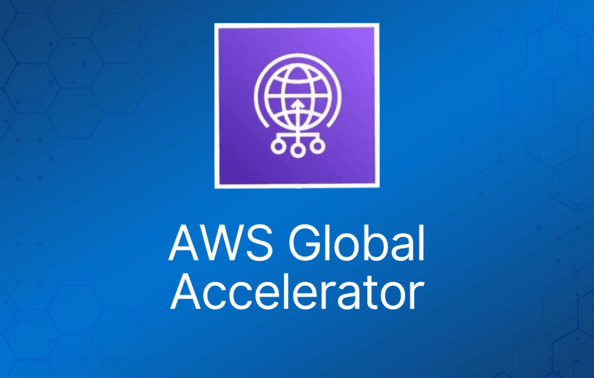

AWS Global Accelerator 是一项提升面向本地或全球用户的应用的可用性和性能的服务。
它提供静态 IP 地址，作为单个或多个 AWS 区域中应用 endpoint（如 Application Load Balancer、Network Load Balancer 或 EC2 实例）的固定入口。
利用 AWS 全球网络优化用户到应用的路径，提升 TCP 和 UDP 流量的性能。
AWS Global Accelerator 持续监控应用 endpoint 的健康状况，能检测出不健康的 endpoint，并在 1 分钟内将流量重定向到健康的 endpoint。
细节与优势
使用位于不同网络区域（A 和 B）的两个冗余静态 anycast IP 地址。
这对冗余地址在全球范围内广播。
使用 AWS Edge Location——地址同时从多个边缘站点宣告。
地址关联到区域级 AWS 资源或 endpoint。
AWS Global Accelerator 的 IP 地址作为应用的前端接口。
智能流量分发：将连接路由到离应用最近的接入点。
目标可以是 Amazon EC2 实例或 Elastic Load Balancer（ALB 和 NLB）。
使用静态 IP 地址后，当你修改或替换 endpoint 时，无需做任何面向客户端的更改或更新 DNS 记录。
只要 accelerator 存在，地址就会一直分配给它，即使你禁用 accelerator、它不再接受或路由流量。
仅对 TCP 进行健康检查——不支持 UDP。
可以在区域内分配目标权重来控制路由，向上或向下“调节”流向某个区域的流量。
容错：
- 采用故障隔离设计，提高应用的可用性。
- AWS Global Accelerator 分配两个由独立网络区域提供服务的 IPv4 静态地址。
- 与 Availability Zone 类似，这些网络区域是隔离的单元，拥有自己的物理基础设施，并从独立的 IP 子网提供 IP 地址。
- 如果某个网络区域的一个 IP 地址因网络中断或被某些客户端网络封禁而不可用，客户端应用可以使用另一个隔离网络区域中健康的静态 IP 地址重试。
基于性能的全球路由：
- AWS Global Accelerator 利用庞大、无拥塞的 AWS 全球网络，将 TCP 和 UDP 流量路由到离用户最近的 AWS 区域中健康的应用 endpoint。
- 如果应用发生故障，AWS Global Accelerator 会立即故障切换到次优 endpoint。
细粒度流量控制：
- AWS Global Accelerator 允许你使用 traffic dial 调高或调低流向特定 AWS 区域的流量。
- 例如，traffic dial 可以让你轻松地在不同 AWS 区域之间对新版本进行性能测试或 blue/green 部署测试。
- 如果某个 endpoint 故障，AWS Global Accelerator 会将用户流量分配给其他 endpoint，以保持高可用性。
- 默认情况下，所有 endpoint group 的 traffic dial 都设置为 100%，以便 AWS Global Accelerator 为应用选择最佳 endpoint。
持续可用性监控：
- AWS Global Accelerator 使用 TCP、HTTP 和 HTTPS 健康检查持续监控应用 endpoint 的健康状况。
- 它会即时响应应用 endpoint 健康或配置的变化，并将用户流量重定向到能为最终用户提供最佳性能和可用性的健康 endpoint。
客户端亲和性（client affinity）：
- AWS Global Accelerator 使你能够构建需要维护状态的应用。
- 对于需要将用户一致地路由到同一 endpoint 的有状态应用，你可以选择将来自某个用户的所有请求定向到同一 endpoint，无论端口和协议如何。
边缘的分布式拒绝服务（DDoS）弹性：
- 默认情况下，AWS Global Accelerator 受 AWS Shield Standard 保护，通过全天候网络流量监控和自动内联缓解，最大限度地减少拒绝服务攻击造成的应用停机时间和延迟。
你还可以启用 AWS Shield Advanced，获得针对特定资源的自动增强检测和缓解能力，并可以 24×7 联系 AWS DDoS Response Team（DRT）手动缓解复杂的 DDoS 攻击。